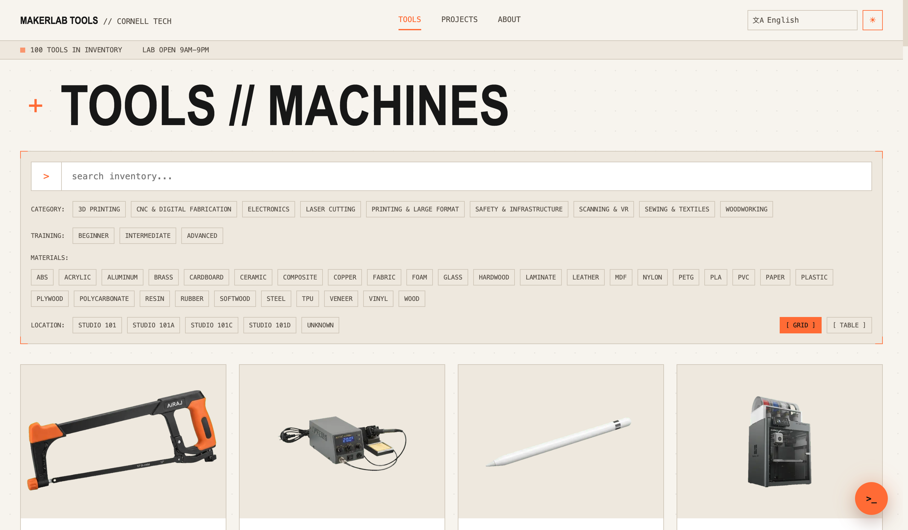
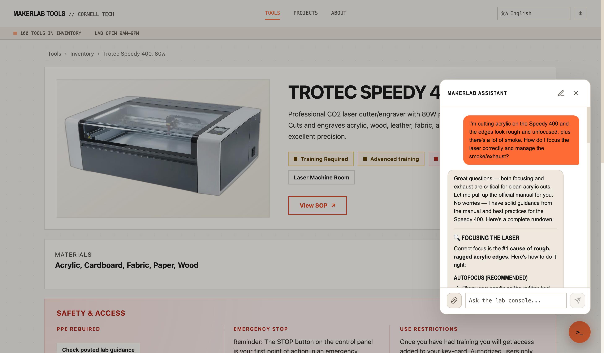
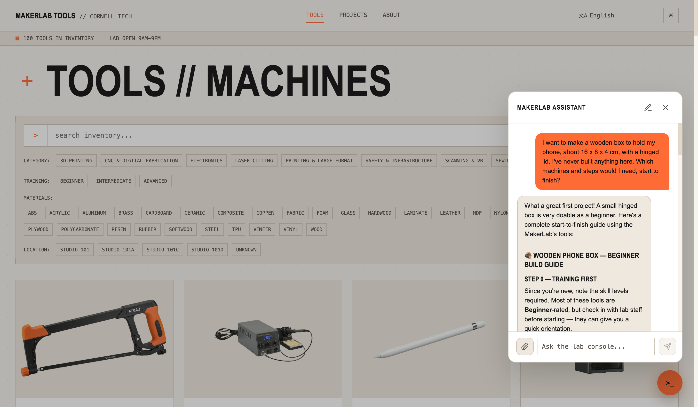

International Symposium on Academic Makerspaces — ISAM 2026
1Isaac Steinberg; Johnson Cornell Tech MBA ’26, Cornell Tech; ies22@cornell.edu
2Niti Parikh; Director, Learning Spaces and MakerLABs, Cornell Tech; ntp27@cornell.edu
3Miguel Ramirez Peraza; Intern, Cornell Tech MakerLAB; ramirezperazamiguel@gmail.com
Abstract—Academic makerspaces run on distributed knowledge—machine documentation, setup procedures, safety rules, materials, inventory, and fabrication workflows—that is hard to surface when staff are not physically present. The Cornell Tech MakerLAB is a case in point: a lean-staff lab that gives students seven-day access, often outside staffed hours, supported by trained student volunteers (“SuperMakers”). This model rewards ownership and peer learning but strains onboarding, troubleshooting, and workflow planning. We demonstrate MakerBot, the conversational assistant in the MakerLab AI Assistant app, which layers an AI interface over a structured operational database (hosted in Notion) so students can, in plain language and in any language, find the right tool, follow manual-grounded setup and troubleshooting, and scope multi-machine projects. The same database is exposed as a live Model Context Protocol (MCP) server, so attendees can query the lab from their own Claude or ChatGPT client. The demonstration is participatory: visitors use the live prototype and also annotate UI templates, map workflows, and record feedback. We frame this as an ongoing R&D initiative whose long-term goal is a shared operational framework spanning Cornell’s campuses while preserving each lab’s local identity— contributing to AI-assisted makerspace operations, participatory interface design, and distributed fabrication support.
The project began on the floor of the Cornell Tech MakerLAB. An intern (a co-author) built a first inventory app in Streamlit to search the lab’s hardware—work that organized the data and framed the problem. Another co-author, volunteering as a “SuperMaker,” added an AI layer; the lab’s director posed the guiding ask: could a student describe a project and have it decomposed against the tools the lab actually has? The insight that followed was that pairing the inventory with each machine’s manual and setup procedures turns a static list into something generative—a step-by-step account of the tooling and workflow a project requires. (An early version generated how-to infographics; today it is grounded text that can seed an image or render on demand.)
That origin exposes a problem the MakerLAB’s operating model makes acute. The lab runs on a lean staff and gives students seven-day access—often outside staffed hours—backed by trained student volunteers (“SuperMakers”). The model rewards ownership and peer learning, but when no staff member is present, the knowledge of what each machine does, who may use it, how to set it up, and how to recover it from a fault lives only in binders and tribal memory. This taxes every interaction, hardest for those least equipped to pay it—the student who is troubleshooting an error in a second language at 11 p.m.
We frame this as an activation-energy problem. Three barriers recur: the barrier to use a machine (does the lab have it, where is it, what training and PPE does it require?); the barrier to debug a machine (it threw an error mid-job—now what?); and the barrier to scope a project that spans several machines. Each routes today to a human bottleneck; our goal is to lower all three at once, for the broadest set of users.
The MakerLab AI Assistant app treats the lab’s operational knowledge as structured, typed data rather than a static list. The layer is a normalized schema—tools, categories, locations, individual units, resources, setup/safety procedures, and maintenance logs—hosted in Notion, which keeps staff editing in a tool they already use. The web application (Next.js / React, deployed on Vercel) presents two surfaces: a gallery with fuzzy ranked search and category, material, training, and location facets across every published machine (Fig. 1), and a tool detail page showing description, location, required training, PPE and use restrictions, emergency-stop guidance, linked SOPs and manuals, and a live table of individual units with their status, condition, and serial.

Overlaying both pages is MakerBot, a conversational assistant invoked from any page (Fig. 2). Rather than baking the catalog into a prompt, MakerBot reasons over it through tool-calling, augmented with web search, document fetch (manuals and SOPs are pulled server-side and read in full), and vision (a photo of a machine or an error screen). Its context scales with place: from the gallery it carries a lightweight index of every tool and its resources; opened from a tool page it loads that machine’s full detail and linked manuals, becoming a domain expert on the machine in front of you. Access is built in end to end: the interface localizes into 12 languages (including right-to-left Arabic and Hebrew), and MakerBot answers in the language asked. The app is white-label—a new lab rebrands and connects its own Notion workspace through environment variables.

The demonstration is both hands-on and participatory: visitors drive the live prototype, then help critique and redesign it.
Attendees open MakerBot on a machine page and ask operational questions in plain language. On the Trotec Speedy 400 laser, “my acrylic edges are rough and there’s a lot of smoke—how do I focus the laser and manage the exhaust?” prompts the assistant to pull the machine’s manual and return concrete focusing (JobControl autofocus) and exhaust steps (Fig. 2). The same flow handles a fault on a staged sample device—photograph the error, get manual-grounded recovery steps in any language, and file a repair report on the spot—so the machine stays online and the incident is captured rather than lost.
From the gallery, a newcomer asks “I want to make a wooden box for my phone with a hinged lid—which machines and steps would I need?” MakerBot returns a start-to-finish, training-aware build plan across the right tools, grounded in the lab’s actual inventory (Fig. 3)—turning a vague idea into an executable workflow.

The database is also a live, standards-based MCP server (streamable HTTP) with tools to list, search, and inspect machines, individual units, and their maintenance history. Attendees connect their own Claude or ChatGPT client and query the lab from a tool they already use—reaching the linked manuals and grounding a 3D print or laser-cut SVG in the lab’s actual build and bed dimensions, tightly coupling design files to the hardware that will make them.
The booth doubles as a design-research station: visitors annotate printed UI templates, map their own workflows, and leave feedback on reflection cards—surfacing pain points and ideas for cross-campus deployment as participatory design data. Requirements: a table, power, lighting, reliable Wi-Fi, and space for a sample device; we supply the laptop/tablet, printed materials, and QR placards.
This work is best experienced, not read. The point is the moment a visitor asks a messy, human question in their own language and watches the lab answer it; connects their own AI client to a physical makerspace; or fixes a “broken” machine without finding a staff member. A demo also lets attendees critique the interface and map their own workflows in person, gathering participatory design data a paper cannot. The interaction is the contribution.
The app is deployed at the Cornell Tech MakerLAB over its real ~100-machine inventory. We are collecting data on whether it measurably helps: issue-resolution rate (resolved without staff escalation), experiment and print throughput, maintenance issues surfaced (and their effect on uptime), and breadth of access (user types and languages used). Question logs double as a pre-telemetry proxy for demand and for tools the lab lacks. We present early observations and frame this as an in-progress study.
This is an ongoing R&D initiative, not a finished product. Its central long-term goal is a shared operational framework across Cornell’s campuses—common onboarding, documentation, equipment access, and workflows—so students move fluidly between labs and programs while each lab keeps its local identity (the white-label contract makes this concrete). Nearer term, the same substrate supports a student-projects gallery linked to the devices that made each project, and a digital twin whose lab-wide agent routes fabrication jobs and coordinates schedules and trainings. The throughline: invest in structured operational knowledge, and every capability—local and cross-campus—compounds on it.
We thank the staff and students of the Cornell Tech MakerLAB. Isaac Steinberg designed the system architecture and wrote all application code for v5 and the current version, developed with the AI coding assistants Claude Code and Codex. In accordance with ISAM policy, we also disclose that a large language model (Anthropic’s Claude) assisted in drafting and editing portions of this abstract; all technical claims, design decisions, and the system itself are the authors’ own.
[1] (Makerspace access / broadening-participation reference — to be finalized.)
[2] (Conversational / natural-language interfaces for technical or educational tasks — to be finalized.)
[3] Anthropic, “Model Context Protocol,” 2024. [Online]. Available: https://modelcontextprotocol.io
[4] (Academic-makerspace operations / management reference, e.g., a prior ISAM paper — to be finalized.)